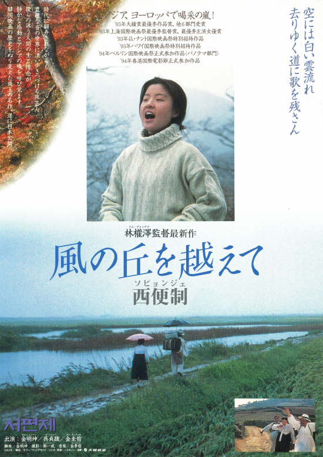
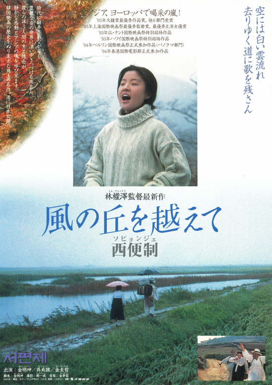
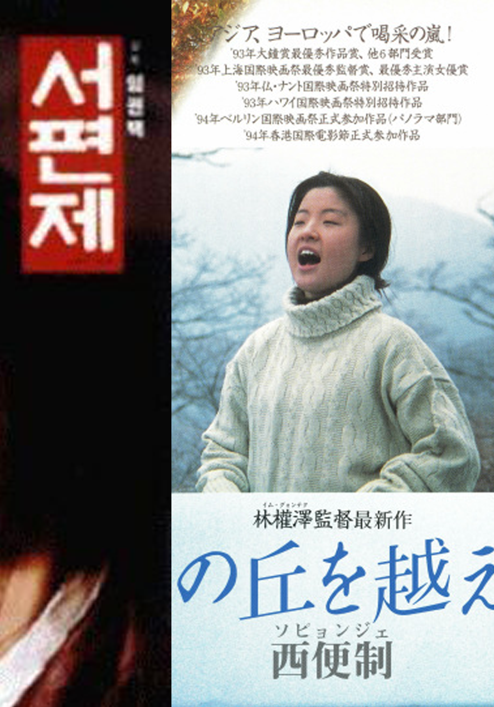
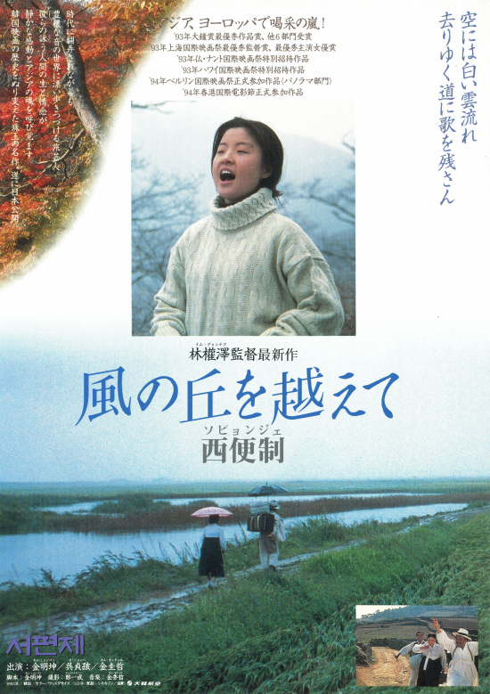

Seopyonje
Im Kwon-taek
In a jumak (a tavern) on a small pass called Soritjae of Boseong County, South Jeolla Province, during the early 1960s, Dong-ho who is in his 30s, recalls his past as he is listening to a rendition of "pansori" sung by the jumak owner. Dong-ho and his sister Song-hwa were raised by the pansori singer Yu-bong, who treats them sternly and with a strict training regimen in his attempts to make serious artists of them as Yu-bong feels that a truly great pansori artist must suffer. Eventually Dong-ho runs away but Song-hwa stays behind.
The Korean version